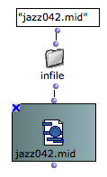

MIDI File
The MIDIFile box represents a MIDI file existing somewhere on your computer.
Instantiation
The MIDIFile box is initalized with a pathname when the box is evaluated. If no pathname is connected, a dialog with open and allow you to select a file on the disk. |  |
Type n to display the file name of a selected MIDIFile box.
Do not forget to loack the box (type b) if you don't want the file to be initialized again at each subsequent evaluations.
a MIDIFile box is also automatically created in your OM patches when you drag a valid MIDI file from your computer file system in it.
Editor
Double click teh MIDIFile box to open the MIDI editor.
Standard play controls are available with the floating palette, and time / pitch values can be read acording to the mouse position.
Each channel is displayed with a different colour. MIDI tracks can be merged or splitted into separate editor tracks, depending on the Separate MIDI tracks box.
The MIDI file editor does not allow to edit or modify the copntents of the MIDI file, but just to display and listen to it.
Extract Data
Data can be extracted from MIDI files by several different ways.
By connecting a MIDI file to an OM score object, the data is interpreted in order to match and fill the object contents depending on its own properties. For instance, in a multi-seq the different tracks will be dispatched among the different voices, while in a chord-seq all tracks will be merged into a single voice. For voice and poly objects, a quantification process will be applied to try to find an appropriate rhytmic structure corresponding to the MIDI notes absolute onsets. |
Several functions in the MIDI / Inspect/Extract menu allow to extract data from a MIDI file.
The more general way of processing MIDI events is the get-midievents method (see MidiEvents section). However, some special methods allow to get more specific infrmation :
The get-midi-notes method returns a matrix of raw data corresponding to the MIDI notes. Each list of the matrix is a track containing notes. A note is a list (pitch offset duration velocity channel). |
Textual Info is sometimes stored and encoded in MIDI files. The get-mf-lyrics function extracts all the lyrics of a song converted to strings. |
Save as MIDI File
All Musical and MIDI objects (including maquettes) can be stored in MIDI File, using the save-as-midi method connected to the MidiFile box input.
In case of simple objects, this is equivalent to exporting the object as a MIDI file and loading the file in a MIDIFile box.